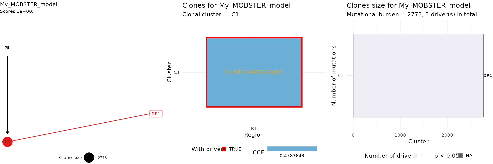

6. Clone trees from clusters
Giulio Caravagna
21 November, 2025
Source:vignettes/a6_CloneTrees.Rmd
a6_CloneTrees.RmdClone trees from mobster fits can be computing using the
internal interface with ctree.
You need to have drivers annotated your object if you want to use
ctree, and every driver_label has to be
unique, as it will be used as the variantID column to
identify the driver event.
We show the analysis with a synthetic dataset.
# Example data where we annotate 3 events as drivers
example_data = Clusters(mobster::fit_example$best)
example_data = example_data %>% dplyr::select(-cluster, -Tail, -C1, -C2)
# Drivers annotation
drivers_rows = c(2239, 3246, 3800)
example_data$is_driver = FALSE
example_data$driver_label = NA
example_data$is_driver[drivers_rows] = TRUE
example_data$driver_label[drivers_rows] = c("DR1", "DR2", "DR3")
# Fit and print the data
fit = mobster_fit(example_data, auto_setup = 'FAST')
#> [ MOBSTER fit ]
#>
#> ✔ Loaded input data, n = 5000.
#> ❯ n = 5000. Mixture with k = 1,2 Beta(s). Pareto tail: TRUE and FALSE. Output
#> clusters with π > 0.02 and n > 10.
#> ! mobster automatic setup FAST for the analysis.
#> ❯ Scoring (without parallel) 2 x 2 x 2 = 8 models by reICL.
#> ℹ MOBSTER fits completed in 8.6s.
#> ── [ MOBSTER ] My MOBSTER model n = 5000 with k = 1 Beta(s) and a tail ─────────
#> ● Clusters: π = 54% [C1] and 46% [Tail], with π > 0.
#> ● Tail [n = 2227, 46%] with alpha = 1.1.
#> ● Beta C1 [n = 2773, 54%] with mean = 0.48.
#> ℹ Score(s): NLL = -5332.99; ICL = -10291.86 (-10614.88), H = 323.01 (0). Fit
#> converged by MM in 11 steps.
#> ℹ The fit object model contains also drivers annotated.
#> # A tibble: 3 × 4
#> VAF is_driver driver_label cluster
#> <dbl> <lgl> <chr> <chr>
#> 1 0.448 TRUE DR1 C1
#> 2 0.159 TRUE DR2 Tail
#> 3 0.0629 TRUE DR3 Tail
best_fit = fit$best
print(best_fit)
#> ── [ MOBSTER ] My MOBSTER model n = 5000 with k = 1 Beta(s) and a tail ─────────
#> ● Clusters: π = 54% [C1] and 46% [Tail], with π > 0.
#> ● Tail [n = 2227, 46%] with alpha = 1.1.
#> ● Beta C1 [n = 2773, 54%] with mean = 0.48.
#> ℹ Score(s): NLL = -5332.99; ICL = -10291.86 (-10614.88), H = 323.01 (0). Fit
#> converged by MM in 11 steps.
#> ℹ The fit object model contains also drivers annotated.
#> # A tibble: 3 × 4
#> VAF is_driver driver_label cluster
#> <dbl> <lgl> <chr> <chr>
#> 1 0.448 TRUE DR1 C1
#> 2 0.159 TRUE DR2 Tail
#> 3 0.0629 TRUE DR3 TailTree computation
Tree computation removes any mutation that is assigned to a
Tail cluster because the clone tree represents the
clones.
# Get the trees, select top-rank
trees = get_clone_trees(best_fit)
#> [ ctree ~ clone trees generator for My_MOBSTER_model ]
#>
#> # A tibble: 1 × 5
#> cluster R1 nMuts is.clonal is.driver
#> <chr> <dbl> <dbl> <lgl> <lgl>
#> 1 C1 0.478 2773 TRUE TRUE
#> ! Model with 1 node, trivial trees returned
#> ✔ 1 trees with non-zero score, storing 1
#>
#> This tree has 1 node, creating a monoclonal model disregarding the input matrix.The top-rank tree is in position 1 of
trees; ctree implements S3 object methods to
print an plot a tree.
top_rank = trees[[1]]
# Print with S3 methods from ctree
ctree:::print.ctree(top_rank)
#> [ ctree - ctree rank 1/1 for My_MOBSTER_model ]
#>
#> # A tibble: 1 × 5
#> cluster R1 nMuts is.clonal is.driver
#> <chr> <dbl> <dbl> <lgl> <lgl>
#> 1 C1 0.478 2773 TRUE TRUE
#>
#> Tree shape (drivers annotated)
#>
#> \-GL
#> \-C1 [R1] :: DR1
#>
#> Information transfer
#>
#> GL ---> DR1
#>
#> Tree score 1
#> We can plot the top tree, aggregating different ctree
plots.
# 1) Clone tree
# 2) Input ctree data (here adjusted VAF)
# 3) Clone size barplot
ggpubr::ggarrange(
ctree::plot.ctree(top_rank),
ctree::plot_CCF_clusters(top_rank),
ctree::plot_clone_size(top_rank),
nrow = 1,
ncol = 3
)